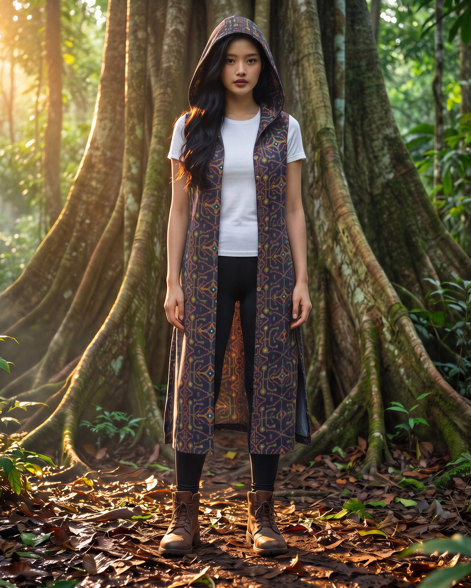
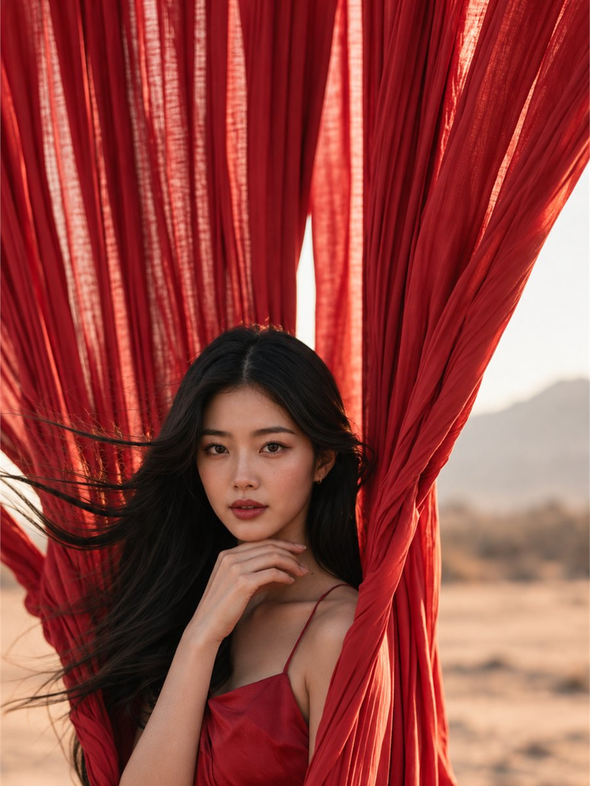
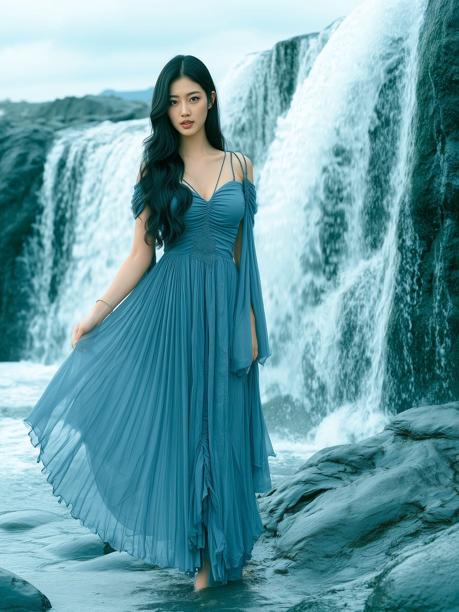
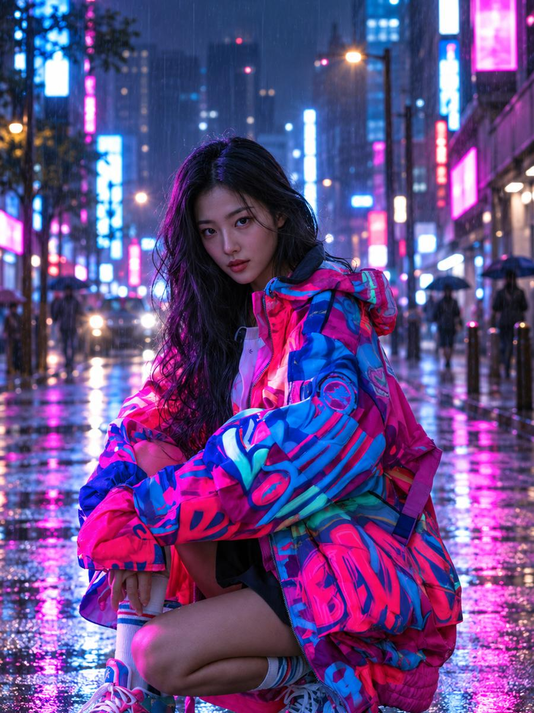

Fashion, decoded
Yerin Seo
One outfit a day, and why it works.

Recent looks
Swipe


The shelf
Empty for now
Soon each look tells you what she is wearing and where to get it.
Fashion, decoded
One outfit a day, and why it works.




The shelf
Soon each look tells you what she is wearing and where to get it.